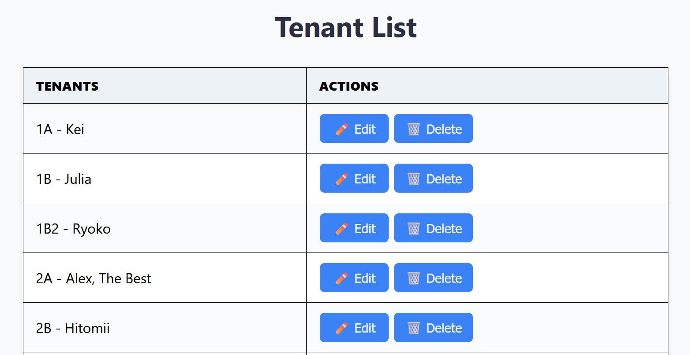

Description:
This Cleaning Schedule App is a simple CRUD web application built with Django
that helps users efficiently manage cleaning tasks.
It allows users to create, view, update, and delete cleaning tasks, and
assign tasks to house members.
The app features a clean, user-friendly interface powered by Django’s robust backend. Link:

Background
When living in Japan, I stayed in a share house. The cleaning schedule was law, and weekly rotatation of
tasks was necessary (and annoying). Lots of manual moving of markers.
I decided to develop an app to do it automatically instead. I used Django for this project
to help me apply the skills I learned from this: Course
Previously: paper and magnets...
... Not so efficient. A button (or task) works better
Goals
- Develop a simple CRUD app to manage cleaning schedules efficiently.
- Design a clean and intuitive interface for easy task management.
Challenges
- Ensuring smooth CRUD operations with clear user feedback.
- Maintaining a simple layout while handling multiple schedules and users.
- Integrating Django models and templates effectively.
Features
- Create, view, update, and delete cleaning tasks and schedules.
- Assign tasks to specific days or users.
- Track progress and completed work in real time.

Learning Outcomes
Gained hands-on experience building a Django CRUD app, designing a user-friendly interface, and improving
backend logic and data handling efficiency.
Future Improvements
This is a good start. But lots could be improved
- A feature so that tasks can be swapped by rooms (helps when someone goes on vacation).
- Be able to remove tenants the day they move out so that their task is marked as unassigned.
- And who wants to rotate tasks manually? Sure it's easier but... Let's make it automatically too with a
weekly task
- Streaks of who was kept up with their tasks (and not)
- User logins, to add roles that can limit who can edit what
The future will see which of these gets implemented